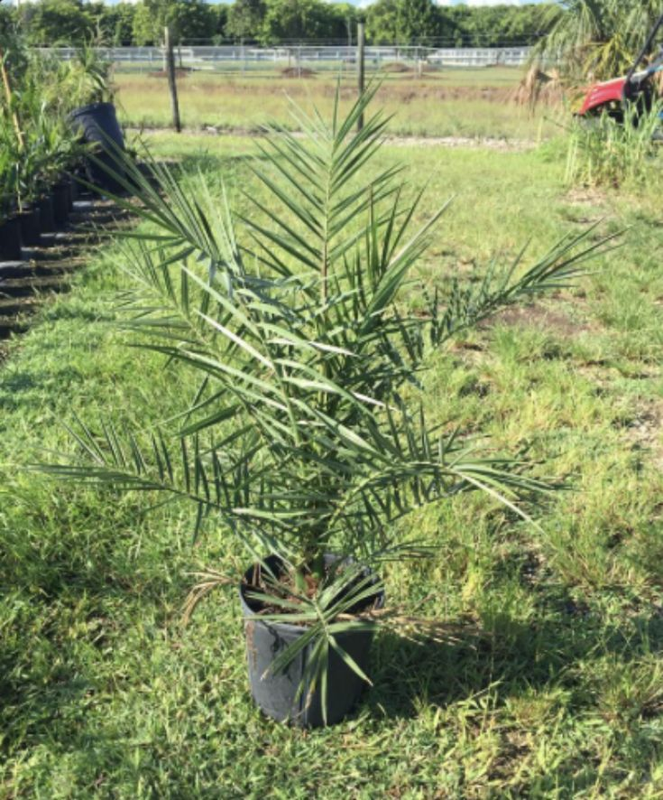
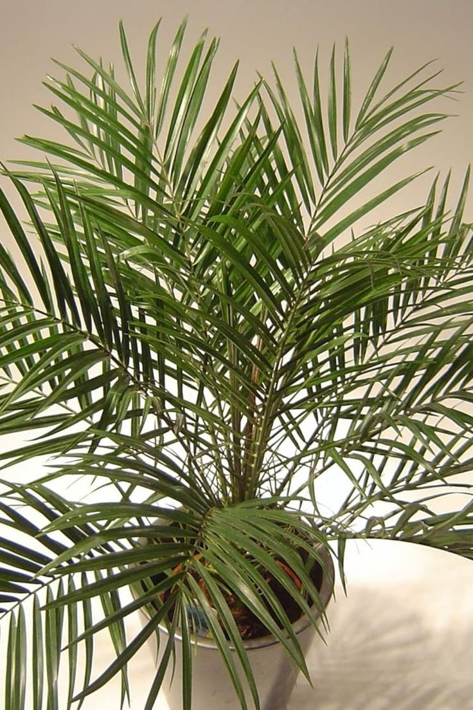
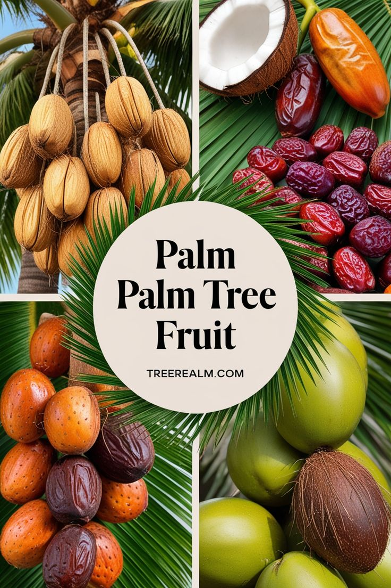
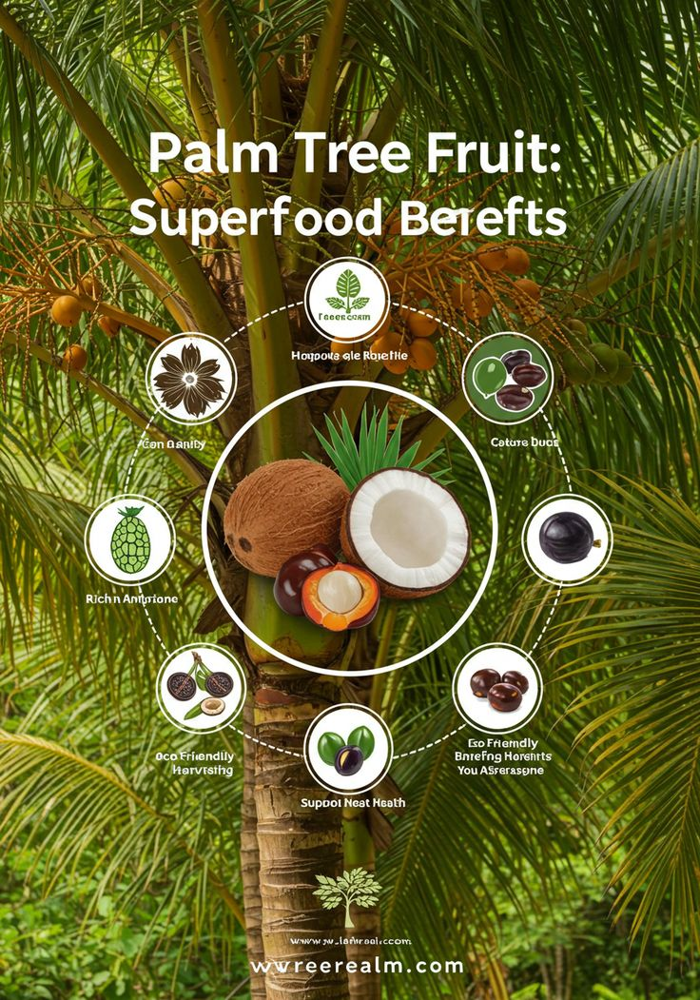
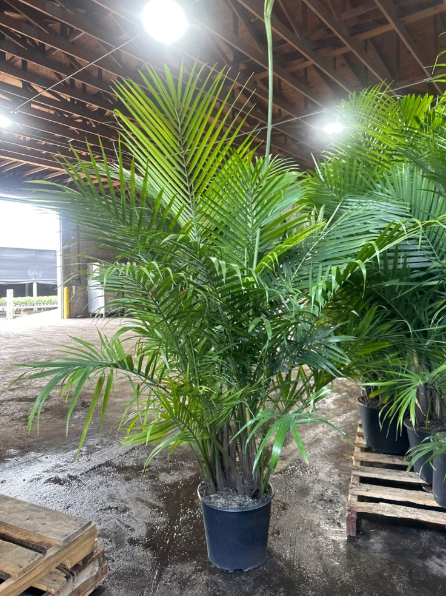
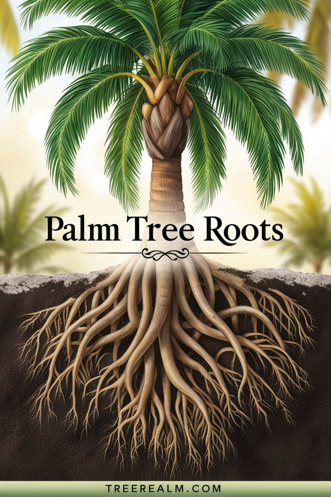

Canary Island Date Palm (Phoenix canariensis)


General Information
Scientific Name: Phoenix canariensis
Family: Arecaceae
Type: Large evergreen palm
Height: Up to 60 ft tall
Uses:
- Ornamental: Iconic in parks, reserves, and avenues.
- Urban Decoration: Often lines boulevards and roundabouts.
- Fibers: Historical use in basket and rope making.
Medicinal & Traditional Uses:
- Not typically used medicinally; edible dates not produced.
- Warning: Fronds and fruit stems are sharp.


Description
A majestic palm with a stout trunk and wide crown of arching, feather-like fronds. Mature trees bear orange fruit clusters and boast a dramatic silhouette.
Habitat & Growth
- Native To: Canary Islands
- Soil: Prefers well-draining sandy or loamy soil
- Sun: Thrives in full sun
- Watering: Low to moderate; drought-tolerant once established


Propagation
Grown from seeds; germination is slow and requires warm temperatures.
Fun Facts
- Often mistaken for edible date palms—its fruit is not edible.
- Popular in Mediterranean-style gardens worldwide.
- Can live for over 100 years in ideal conditions.